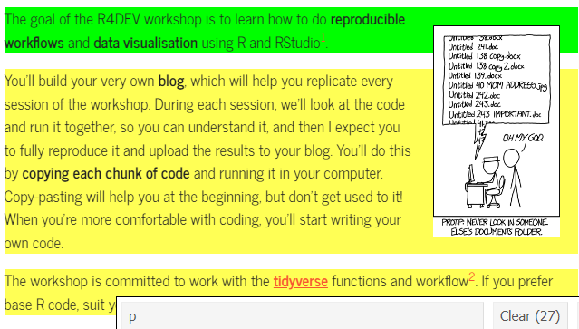
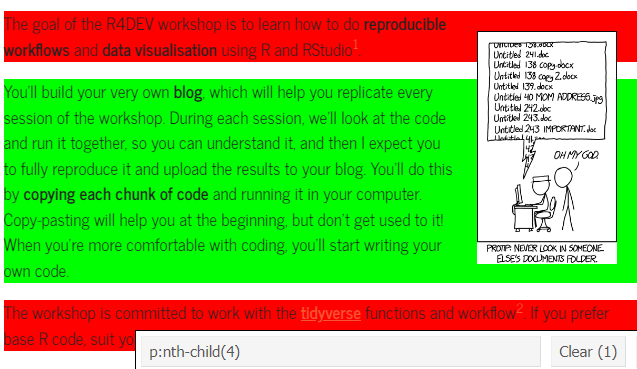
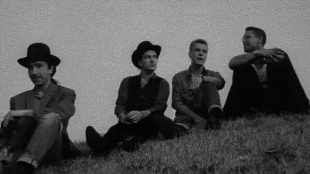
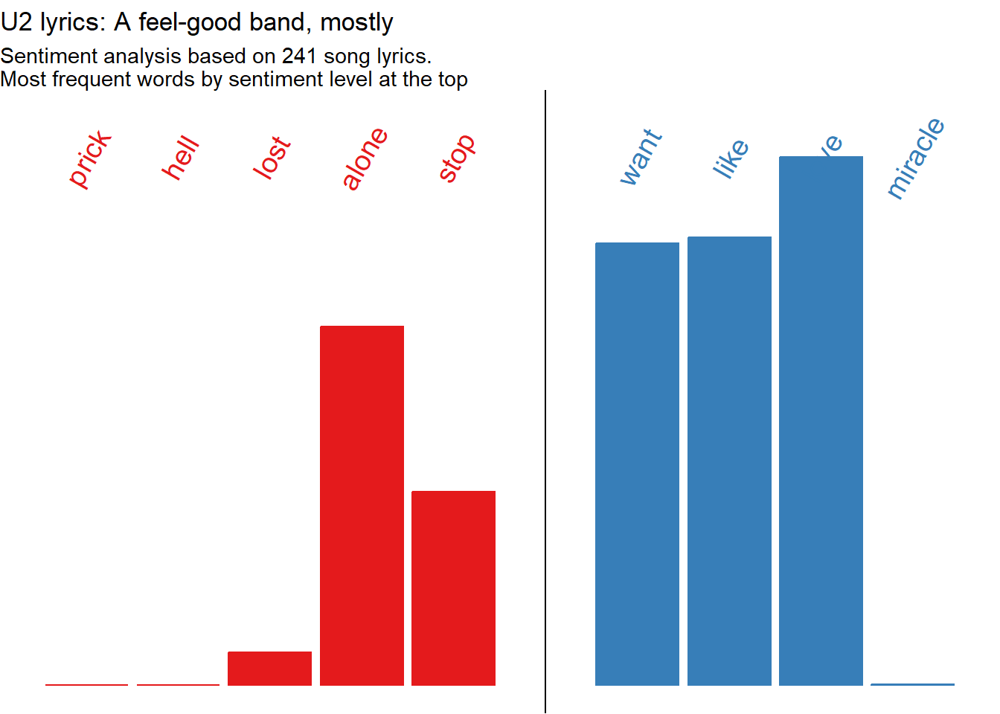
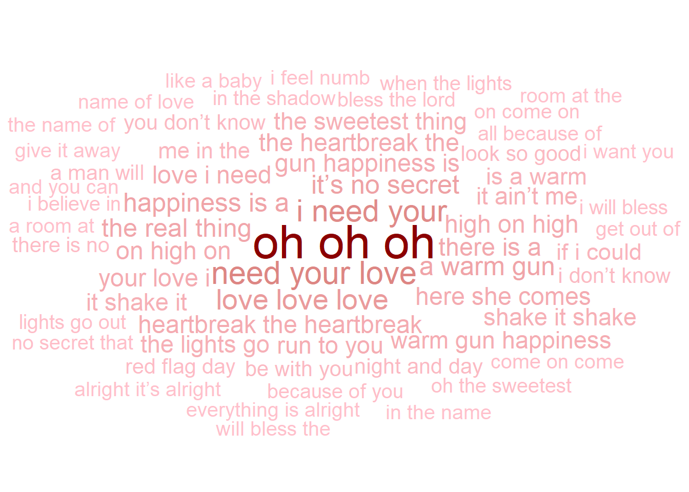

Sometimes you need to bring data straight from a website. Scrape IMDb movie rankings, U2 lyrics and untranslatable words.
Author
Nelson Amaya
Published
July 31, 2022
Modified
October 6, 2026
If it doesn’t exist on the internet, it doesn’t exist. –Kenneth Goldsmith
Level: Intermediate · Time: ~60 min · Prerequisites: Everything in its right place · Tools: rvest, chromote, purrr
You will learn to
Scrape a static webpage’s HTML with rvest when no API is available.
Scrape a JavaScript-rendered page with read_html_live()/chromote.
Turn a scraped list into a tidy tibble with purrr’s imap()/map_df().
Recognise when scraping is the wrong tool – and save a scrape once instead of hitting a live site on every render.
PART I: Pick it, grab it
Although you’ve learned to use API and dedicated packages to get information from online sources, sometimes you want to just take a table from Wikipedia, or some text from a webpage and bring it into R.
To do this you need two tools:
The rvest package, which helps read HTML pages and gather information from them
Install the Selector Gadget Extension in your browser. This will help you select the object you want to import.
How does the Selector Gadget work? By clicking in an HTML page until the objects you want are selected in green.
Imagine you want to extract text from the Home page of R4DEV, but you only want one paragraph. Clicking the elements you want until only what you want is highlighted in green, as shown below, will let you know which element you’ll scrap. The selected element p:nth-child(4) will appear below and you can copy it to use it as it is shown below.

Selecting some elements

When green, you got it!
Top movies according to IMDb
IMDb has a list of the best ranked movies. We’ll pull it straight from the website using rvest. Using the Selector Gadget, we click on the objects of the webpage we want and bring them to the code that will pull that information and transform it into text.
We will extract the ranking, title, year and country of every movie from the Wikipedia entry.
For tables, rvest has a shortcut that spares you the click-hunting: html_table() grabs an HTML table and returns it as a tibble directly. Whenever what you want looks like a table on the page, reach for it first –hand-picked selectors like the ones above are brittle, and break whenever the page structure changes (this very session broke that way once; ask the instructor).
Select the first element with class wikitable –Wikipedia uses that class for its data tables. Selector Gadget confirms it in one click
5
html_table() parses the rows and columns straight into a tibble –no text-wrangling gymnastics needed
# A tibble: 249 × 6
Rang `Titre français` `Titre original` `Réalisateur(s)` Année `Pays[10]`
<int> <chr> <chr> <chr> <int> <chr>
1 1 Les Évadés The Shawshank R… Frank Darabont 1994 États-Unis
2 2 Le Parrain The Godfather Francis Ford Co… 1972 États-Unis
3 3 Le Parrain, 2e part… The Godfather: … Francis Ford Co… 1974 États-Unis
4 4 Pulp Fiction Pulp Fiction Quentin Taranti… 1994 États-Unis
5 5 Le Bon, la Brute et… Il buono, il br… Sergio Leone 1966 Italie
6 6 The Dark Knight : L… The Dark Knight Christopher Nol… 2008 États-Unis
7 7 Douze Hommes en col… 12 Angry Men Sidney Lumet 1957 États-Unis
8 8 La Liste de Schindl… Schindler's List Steven Spielberg 1993 États-Unis
9 9 Le Seigneur des ann… The Lord of the… Peter Jackson 2003 États-Unis
10 10 Fight Club Fight Club David Fincher 1999 États-Unis
# ℹ 239 more rows
TipA little HTML is enough
Learn a little HTML, it will help you identify quickly the information you want to retrieve from a website. Read the Get Started section in rvest.
Now a little cleaning –scraped column names arrive messy and accented– and we create a searchable table using reactable, which should be your go-to package for interactive tables.
library(tidyverse)library(RColorBrewer)library(reactable)library(reactablefmtr)6imdb_top_250_raw |>7 janitor::clean_names() |>8 dplyr::select(rank = rang, title = titre_original, year = annee, country =starts_with("pays")) |>9 dplyr::mutate(across(c(rank, year), as.numeric)) |># Tablereactable(filterable =TRUE,searchable =TRUE,highlight =TRUE,striped =TRUE,resizable =TRUE,theme =journal(font_size=12) )
6
Start with the scraped table
7
clean_names() from janitor turns Titre français and friends into safe lowercase names without accents
8
We keep and rename the columns we care about –starts_with("pays") catches the country column even though Wikipedia decorates its name with a footnote marker
9
We change rank and year to numeric values using across(), which is used to modify multiple columns
Rejoinder: Feeling U2
Now that we know how to get data from websites, carry out text analysis and visualise, let’s put together all three to something concrete: doing sentiment analysis of all U2 lyrics.
First, we get all lyrics from U2, which are collected in their website. We go to the lyrics page and retrieve the URL of each song. There are over 240 lyrics, but the URLs for each one are not sequential, and include random large numbers. So after extracting the element we want using html_elements(), we use the html_attr() function to retrieve the URL for each lyric. Then we can pass all URLs through a loop and save into an empty list, as we did with songs before.

The Edge
library(tidyverse)library(rvest)library(tidytext)# Extract all song lyrics URLs ####u2_urls <-"https://www.u2.com/music/lyrics"|># First step as before rvest::read_html() |># We select the element we want, which is the link to every song rvest::html_elements(".lyricItem--link") |># We extract the link to each song by picking an attribute, which for links is href rvest::html_attr("href") |> tibble::as_tibble() |># We keep only one variable which is the URL of each song dplyr::transmute(url =str_c("https://www.u2.com",value))# Create an empty list and save all song lyrics using a loop ###u2_lyrics <-list()for(i in u2_urls$url) { u2_lyrics[[i]] <- rvest::read_html(i) |># Extract what we want rvest::html_elements("p") |># Make it into text using html_text2 rvest::html_text2() |>as_tibble() }
TipScrape once, save, reuse
The loop above knocks on u2.com about 240 times and takes several minutes –running it on every render would be slow and rude to the band’s web server. So we practice what session 2 preached: we ran it once, saved the result, and load the snapshot from now on. split() rebuilds the exact same named list the loop produced.
Second, we do a little wrangling to transform the list to a tibble, our favourite layout and format for rectangular datasets. We use imap() to name each element in the list, and then map_df() to bind them all together. This leaves us with a dataset where each row includes the lyrics of a song.
Third, we tokenise by words, remove stopwords and join the sentiment lexicon. Just as we did with books before. With a twist: we’ll use both words and n-grams as tokens. For words, we calculate the frequency for each value of the sentiment lexicon, and feed into ggplot. For flair, we add the most frequent word for each sentiment value at the top of the graph and plot the frequency of all words lyrics. For ngrams, we just count the expressions that are more frequent in the entire lyrics space.
library(tidyverse)library(tidytext)u2_lyrics |># Add a variable inside of every tibble in the list with the url, using imap purrr::imap(~mutate(.x, url=.y)) |># Bind into a data frame all lyrics purrr::map_df(bind_rows) |> dplyr::filter(!str_detect(value,"No lyrics")) |># Unnest words tidytext::unnest_tokens(input ="value", output ="text", token ="words") |># Remove stopwords dplyr::anti_join(stopwords::stopwords("en") |>as_tibble(), by=c("text"="value")) |># Join sentiment lexicon dplyr::inner_join(tidytext::get_sentiments("afinn"), by=c("text"="word")) |># Calculate most frequent word by sentiment lexicon dplyr::group_by(text) |> dplyr::mutate(word_freq =n()) |> dplyr::ungroup() |># Summarise #### dplyr::group_by(value) |> dplyr::mutate(n =n(),p = n/sum(n),c =case_when(value<0~"Negative", value==0~"Neutral", value>0~"Positive") |>factor()) |># Feed to ggplotggplot(aes(x=value,y=n,fill=c, color=c))+geom_col()+# Notice how the data is filtered inside of the geom ####geom_text(data = . %>% dplyr::group_by(value) %>% dplyr::slice_max(n=1, order_by = word_freq) %>% dplyr::distinct(text, .keep_all =TRUE),aes(y=700000, label=text), angle=60, size=5)+geom_vline(xintercept =0)+scale_x_continuous(breaks=seq(from=-5,to=5,by=1))+scale_y_continuous(limits =c(0, 750000))+scale_fill_brewer(palette ="Set1")+scale_color_brewer(palette ="Set1")+labs(title ="U2 lyrics: A feel-good band, mostly",subtitle ="Sentiment analysis based on 241 song lyrics.\nMost frequent words by sentiment level at the top",x="Sentiment lexicon: AFINN",y="Word frequency")+theme_void()+theme(legend.position ="none")

library(tidyverse)library(tidytext)library(ggwordcloud)u2_lyrics |># Identify each list with the url using imap purrr::imap(~mutate(.x, url=.y)) |># Bind into a data frame all lyrics purrr::map_df(bind_rows) |> dplyr::filter(!str_detect(value,"No lyrics")) |># Unnest tidytext::unnest_tokens(input ="value", output ="ngram", token ="ngrams", n=3) |> dplyr::count(ngram, sort=TRUE) |> dplyr::distinct_all() |> dplyr::slice_max(order_by = n, n =50) |>ggplot()+ ggwordcloud::geom_text_wordcloud(aes(label = ngram, size = n, color=n)) +scale_size_area(max_size =12) +scale_color_gradient(low ="pink", high ="red4")+theme_minimal()

TipMore ggplot2 extensions
You now know how to work with ggplot2 and some extensions like ggridges or ggiraph. But there are many more you might want to check out. The gallery of over a hundred extensions is here, and some of my favorites are listed below:
ggdist provides stats and geoms for visualising distributions and uncertainty.
ggExtra lets you add marginal density plots or histograms to ggplot2 scatterplots.
This site holds words and concepts in multiple languages that don’t translate. Getting all the words and definitions is not easy, as each time you enter the site, a random set of words pops up. There is no easy way to download the list of words, but we can still do it.
Exactly
How many words are there, how can we scrap them? As of late 2021, there were over 500. In 2023, that number grew even more, to over 700.
We are doing this task by throwing computational brute force: we will scrape the site multiple times until no new words are retrieved, using while function that will run until no new words are found.
The code takes time to run, but it does the trick.
library(rvest)library(tidyverse)# URL ####eunoia_url <-"https://eunoia.world/"# Step 1 - Create an empty list and an empty data frame. We will store the results there ####eunoia <-list()eunoia_df <-tibble()# Step 2 - We'll use while function to scrap the website until we have 700 different words ####while (tally(eunoia_df) <=690) {# i) Loop 100 scraps of the website and save them into the empty listfor (i inc(1:100)) {# A - Start with empty list and double bracket to save as elements eunoia[[i]] <- eunoia_url |> rvest::read_html() |> rvest::html_elements("td:nth-child(3) , td:nth-child(2) , td:nth-child(1)") |> rvest::html_text() |> tibble::as_tibble() |> dplyr::mutate(names =rep(c("word","description","language"), times =n()/3)) |> tidyr::pivot_wider(values_from = value, names_from = names, values_fn = list) |> tidyr::unnest(cols =everything())# B - Put together all the results into a data frame using map_df and removing repeated words eunoia_df <- eunoia |> purrr::map_df(bind_rows) |> dplyr::distinct_all() }}
Now let’s check all the downloaded untranslatable words is a reactable table, using a bootswatch theme and aggregating all words by language groups using groupBy() and a bit of column styling.
Tipreactable tables can be very fancy
You can customise these tables a lot. Check out these examples and re-use any elements that you want to style the tables.
Everything so far assumed the data is already in the page: read_html() downloads the HTML the server sends, and we harvest it. But many modern websites arrive almost empty and build their content afterwards, by running JavaScript in your browser. read_html() never runs JavaScript, so it sees only the hollow shell.
See it for yourself. quotes.toscrape.com is a sandbox built for practicing scraping, and it serves the same quotes twice: once as normal HTML, and once rendered by JavaScript at /js/. Watch what happens when we scrape the JavaScript version the old way:
The same selectors that work on the static version return… nothing. The quotes aren’t in the HTML the server sent –they are built by JavaScript after the page loads.
character(0)
The fix is one function swap: read_html_live() opens a real (but invisible) Chrome window using the chromote package, lets the JavaScript run, and then hands the rendered page to the exact same selector functions you already know.
read_html_live() needs the chromote package and a Chrome-based browser installed –that’s it. No Java, no Docker, no drivers.
13
From here on, everything is the rvest you already know: same selectors, same functions.
14
A little map_df() pattern to turn each quote <div> into a row –one anonymous function, one tidy tibble.
# A tibble: 10 × 2
quote author
<chr> <chr>
1 “The world as we have created it is a process of our thinking. It can… Alber…
2 “It is our choices, Harry, that show what we truly are, far more than… J.K. …
3 “There are only two ways to live your life. One is as though nothing … Alber…
4 “The person, be it gentleman or lady, who has not pleasure in a good … Jane …
5 “Imperfection is beauty, madness is genius and it's better to be abso… Maril…
6 “Try not to become a man of success. Rather become a man of value.” Alber…
7 “It is better to be hated for what you are than to be loved for what … André…
8 “I have not failed. I've just found 10,000 ways that won't work.” Thoma…
9 “A woman is like a tea bag; you never know how strong it is until it'… Elean…
10 “A day without sunshine is like, you know, night.” Steve…
TipNeed to click, type or scroll?
read_html_live() covers the most common case: pages that render with JavaScript. When you also need to interact –click “load more”, fill a search box, log in– use selenider: it drives the same headless Chrome with a friendly syntax (open_url(), s(".button") |> elem_click()).
You may find old tutorials using RSelenium for this. It works, but it is a heavyweight from another era –it needs Java and browser drivers, and its maintenance has wound down. chromote and selenider are its modern replacements.
🏗 Practice 7: Scrape
Browsers block cross-site scraping (the same rule that protects you online, called CORS), so the in-browser exercises parse HTML handed to you as a string – the selector skills are identical. Real scraping waits in the Advanced tier.
NoteBasic
Extract the text of every quote from this mini page – same structure as the quotes sandbox above. One blank: the CSS selector.
NoteHint
Chain two class selectors: the container class, a space, then the class of the element holding the text – exactly the selector the session used on the quotes sandbox.
Try ".quote .author" next to grab who said each one.
ImportantIntermediate
Whenever what you want looks like a table, skip the selector hunt. Two blanks: the function that grabs the table node, and the shortcut that turns it into a tibble.
NoteHint
The session used this exact pair on a real Wikipedia table: one function selects the <table> element, its companion parses rows and columns into a tibble.
Real scraping needs a real network connection and your own R session:
Find a website with info you want to bring to R, scrape it, and visualise the data (plot, map, etc.).
Scrape any Wikipedia table and plot the result in R.
Scrape all ten quotes from the JavaScript sandbox with read_html_live(), including the tags of each quote.
Scrape the lyrics for Bob Dylan, Pearl Jam or another artist you can find online. Re-create the sentiment analysis workflow for their lyrics.
The U2 page with lyrics also shows every time each song has been played during a tour since the late 80s. Scrape the tour dates and visualise song popularity through time.
Key takeaways
rvest reads static HTML; chromote’s read_html_live() waits for JavaScript to render first – know which page you’re facing before picking a tool.
Selectors (CSS/XPath) are how you tell rvest which piece of the page you want.
A scraped list usually needs imap()/map_df() to become a proper tibble.
Scraping a live site on every render is slow and rude – save the result once and reuse the snapshot, as this lesson’s own U2 lyrics data does.